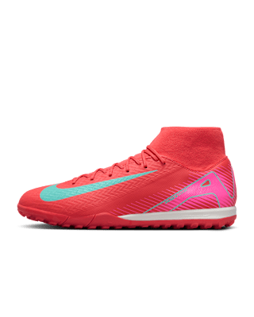

Zapatos
Para los zapatos tenemos a nuestro colaborador especial para eso y es nada mas ni menos que la marca de Nike para los tenis que utilizan nuestros deportistas, para que disfruten de jugar con el mejor equipo posible con la mayor comodidad en sus partidos
Nike Mercurial Superfly 10 Elite x Air Max 95 SE
Tacos de fútbol FG de corte high
Para celebrar el 30 aniversario de los Air Max 95, es justo que brindemos por la enrarecida lealtad AIR entre el ícono del estilo de vida y los meteóricos Mercurial.
$7,499
Nike Phantom GX 2 Elite "Erling Haaland"
Tacos de fútbol FG de corte low
Es inevitable pensar en Erling Haaland. En el momento crucial del partido, no hay quien detenga la fuerza goleadora de la naturaleza.
$5,699

Nike Mercurial Superfly 10 Academy
Tacos de fútbol TF de corte high
¿Quieres llevar tu velocidad al siguiente nivel? Confeccionamos estos tacos Academy con una unidad Air Zoom mejorada en el talón.
$2,499
Nike Mercurial Vapor 16 Elite
Tacos de fútbol FG de corte low
¿La velocidad es tu obsesión? También para las mayores estrellas del fútbol. Por eso, creamos estos tacos Elite con una unidad Air Zoom mejorada de 3/4 de largo.
$6,499